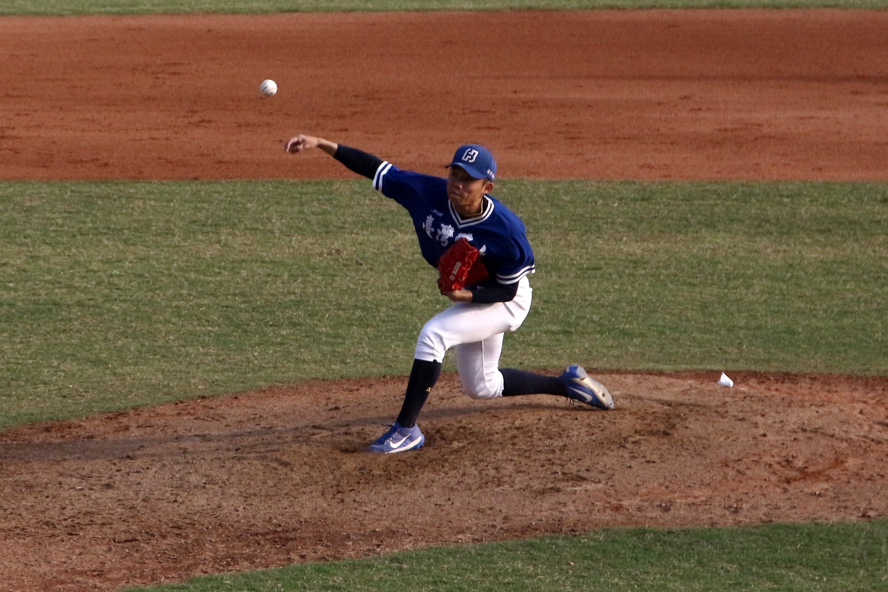

.jpg)
李昕芸
2019/?/?
【記者李昕芸台中報導】九局下，國立台灣體育運動大學投手江國豪舉起胳膊 、回望一眼後，出其不意地出手，投出一顆快速球，對方打者再次揮棒落空， 一記再見三振，台體大以16：5完勝南華大學。現場歡聲雷動，台體大球員們 興奮地衝進球場，拿起水瓶向天空灑水，慶祝睽違七年再次奪冠。而對戰的南 華雖僅抱回亞軍，但仍創下隊史最佳紀錄。 這是我人生第一次看完整的一場棒球賽，也不知道他們會有這樣的慶祝儀式， 當時就是嚇到，然後狂按快門，心裡只想說，死都要拍到好照片。
這是我人生第一次看完整的一場棒球賽，也不知道他們會有這樣的慶祝儀式，當時就是嚇到，然後狂按快門，心裡只想說，死都要拍到好照片。
第20屆梅花旗全國大學棒球錦標賽最終戰11日在台體大棒球場登場，由地主隊 台體大與南華爭冠亞。比賽前三局，南華以3：4緊追台體大，但台體大也不甘 示弱，被對方搶下兩分後，便派出2018 U-23世界盃棒球賽國手江國豪上場救援 ，成功阻擋南華的進攻。台體大更把握南華控球不穩的機會，在五局上獲得五 次保送，僅憑兩支安打及一支高飛奪下五分，拉開比分差距。
我其實當時完全不知道他是國手，也不知道他很強，是後來採訪的時候聽別人說的哈哈哈，所以也很可惜沒採訪到他。

南華前三局以3:4緊追台體大，但最後仍不敵台體大的安打猛攻，獲得亞軍。 圖／李昕芸攝 台體大派出2018 U-23世界盃棒球賽國手江國豪上場救援，成功阻擋南華的進攻。 圖／李昕芸攝九局上，台體大又靠著洪瑋漢、王膺鵬、林郁祐的連線安打，接連攻下七分，成功以16：5摘下本次梅花旗冠軍，選手林郁祐更以高達6成92的打擊率，奪得個人打擊獎。台體大教練林宗毅指出，此次出賽球員偏年輕，雖表現不穩定，「但選手都有達到各自的目標」，球員的進步仍值得肯定。
 台體大選手林郁祐接連安打，最後以高達6成92的打擊率，奪得本次賽事個人打擊獎。 圖／李昕芸攝
台體大選手林郁祐接連安打，最後以高達6成92的打擊率，奪得本次賽事個人打擊獎。 圖／李昕芸攝首度挺進冠軍賽的南華，八強戰以5：4險勝對手，使連霸三年的中國文化大學止步八強。儘管南華這次未能奪冠，但初闖八強就拿下亞軍，已創下隊史最佳成績。「很開心有今天的表現！」南華隊長全浩瑋提到獲獎時，難掩興奮地說：「成軍三年，其實大家都不看好我們，所以我們基本上是沒有壓力的打比賽。」
 南華這次雖未奪冠，但初闖八強就拿下亞軍，已創下隊史最佳成績，球員們都相當滿意此次表現。 圖／ 李昕芸攝
南華這次雖未奪冠，但初闖八強就拿下亞軍，已創下隊史最佳成績，球員們都相當滿意此次表現。 圖／ 李昕芸攝南華訓練員郭健瑜透露，今年2月球員們前往日本早稻田大學移地訓練，為期一週，他認為，球員在與日本選手交流過後，都有顯著的成長。「看到那邊（稻田）的訓練情況，也更要求選手在技術上、心態上的進步。」此次南華成績雖創下隊史最佳，但郭健瑜坦言仍有進步空間，之後會針對投手的穩定性進行訓練。
採訪訓練員的時候，印象最深刻的就是他滿身的菸味跟檳榔味，讓我整個很崩潰，而且他靠我超近，後來發現很多棒球教練裁判都會抽菸嚼檳榔。採訪後記
應該很多人會很驚訝，但我這個體育版記者居然從來都沒有看過任何一 場棒球比賽，任何一場喔，我到現在還會把恰恰跟彭恰恰搞混，就是門外漢中 的門外漢。跑比賽的前一天很認真的惡補棒球規則，三個壘包在哪裡，什麼是 好球壞球，總共有幾場，前一天還睡不好，深怕當天會出錯。
比賽那天是豔陽天，照片拍起來都蠻好看的，就是球很快，不容易抓拍到球跟 選手在同一個畫面的照片，不過還好棒球賽非常漫長，有非常多的練習機會。 比賽時間真的很長，但觀眾都蠻熱情的，尤其是南華大學用遊覽車自己帶了整 組的加油團來，反而是地主隊台體大的加油團沒什麼人，連自家學生都很少來 看比賽。
我在場邊搭訕了幾個台體大的學生，他們人都超好，隨時給我講解比賽現況， 儘管前面就有大大的計分板（我一直到五局下才發現棒球場後面有超大的計分 板），他們還是很認真的教我，真的超級感動。托他們的福，我也是覺得棒球 賽挺有趣的，是一個充滿熱血和青春的運動。
值得一提的是，台灣的棒球比賽有個很可愛的播歌文化，就是配合各個球隊播 一些加油的歌曲。我印象最深刻的是有一個台體大打擊手被球砸中手指，痛到 他整個躺在地上，捲成一團，看起來超可憐，教練裁判都衝上前去關心他。但 是這時候，大會DJ居然播安心亞的「呼呼」，整個場都是安心亞又甜又膩的歌 聲，唱著「你受傷了，他幫你呼呼，他幫你呼呼。」那瞬間我真的在場邊偷笑 ，覺得選手明明很痛苦，但氣氛非常滑稽。
回來後，因為照片很美，被選成了頭版頭條，當下整個超開心。雖然大家都會 吐槽說，只要照片夠好看、議題夠好就很容易上頭條，但對於沒上過的人而言 ，能上就是很爽哈哈哈。也真不愧在這麼熱的天裡，我在太陽底下站了超過四 個小時，為了拍到好照片，還要隨著換場的時候更換拍攝角度，換角度不是只 是從左邊轉到右邊，是要繞整個棒球場跑，爬上又爬下的，雖然很累，但也是 值得了。
 洪靖淳
洪靖淳.jpg)